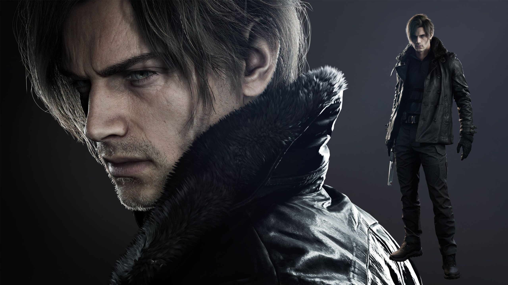
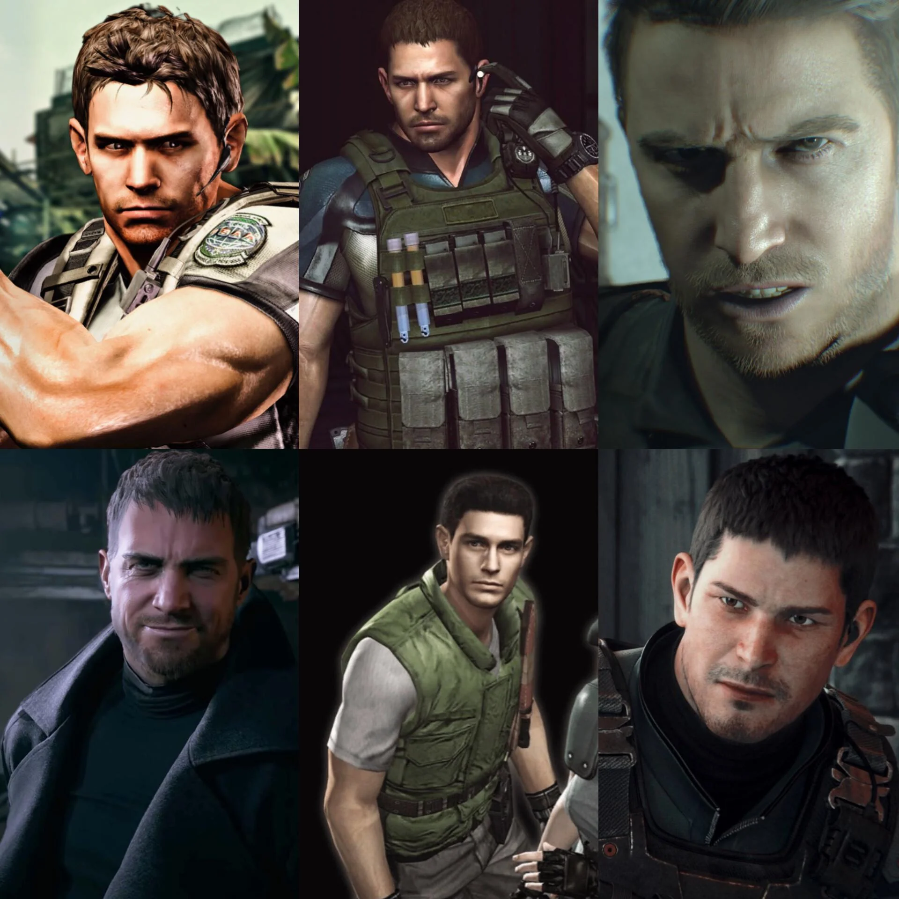

Personnages Emblématiques

Leon S. Kennedy
Affiliation : Agent du Gouvernement / Ex-R.P.D.[cite: 4]
Ancien policier débutant lors de la tragédie de Raccoon City, Leon est devenu un agent secret d'élite redoutable face aux menaces bio-terroristes mondiales.

Jill Valentine
Affiliation : S.T.A.R.S. / B.S.A.A.[cite: 3]
Experte en crochetage et en désamorçage, elle a survécu aux horreurs du manoir Spencer et a affronté le terrible Nemesis dans les rues de Raccoon City.

Albert Wesker
Affiliation : Umbrella Corp (Traître) / Tricell[cite: 2]
Cerveau machiavélique et ancien capitaine des S.T.A.R.S.. S'étant injecté un virus expérimental, il possède des capacités physiques surhumaines et des yeux rouges perçants.

Chris Redfield
Affiliation : Capitaine B.S.A.A. / Ex-S.T.A.R.S.
Militaire aguerri et frère de Claire, il a consacré toute sa vie à détruire les laboratoires d'Umbrella et à combattre le bioterrorisme armé à travers le globe.